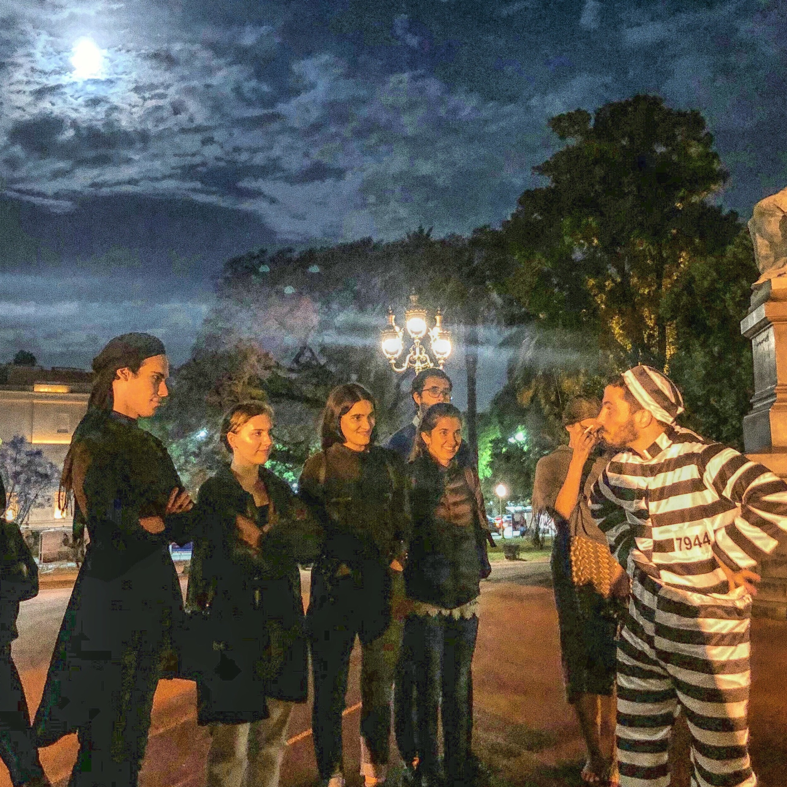
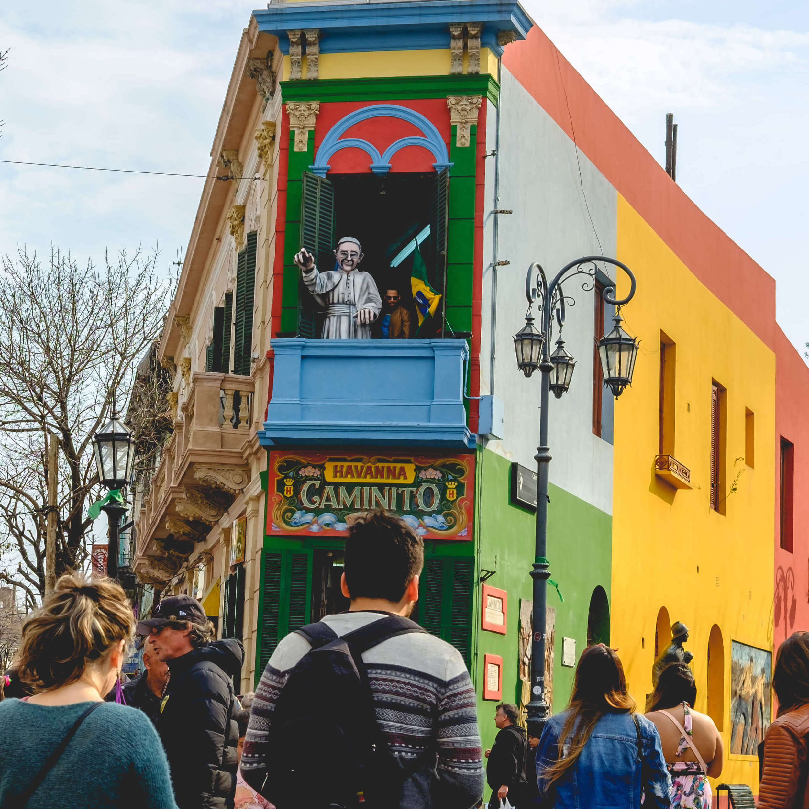
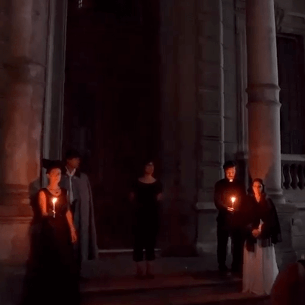

LOCALES EN MODO TURISTA
Desde TuristearteBA te proponemos que sigas con ese espíritu inquieto y abierto de cuando viajas. Te
invitamos a que saques a tu cabeza de vacaciones por unas horas y disfrutes de esta hermosa ciudad.
¿Qué significa Locales en modo Turista? Enfatizada curiosidad y alta predisposición para
sorprenderte con tu propia cultura.
¡Mira nuestras próximas salidas!
¿Qué es Turistearte BA?
Es una propuesta de turismo para locales que busca que los porteños conozcamos un poco más
nuestra propia cuidad, y con eso nuestra historia, nuestro patrimonio, nuestra identidad.
Invita a Redescubrir la gran belleza e interesante historia de Buenos Aires, y de esta manera
enamorarnos un poco mas del lugar que atravesamos a diario!
Organizamos caminatas de locales en modo turista. Nos encontramos en algún punto de la ciudad
y salimos a patear y conocer las joyas del barrio en el que estemos.
Algunos de nuestros recorridos..
Turistearte del Terror

Buenos Aires puede ser muy siniestra... Un recorrido de historias raras, leyendas urbanas,
asesinatos, fantasmas, cadáveres y maldiciones por Recoleta!
Ver próxima fecha
1 BARRIO POR MES!

La propuesta es que cada mes salgamos a conocer un barrio distinto, y de esta manera ir
conquistando la Ciudad de Buenos Aires.
Ver próxima fecha
Turistearte Amores Turbios

Un recorrido a pie por el aristocrático barrio de Retiro donde descubriremos las
historias de amores prohibidos, infidelidades, celos, venganza y traición.
Ver próxima fecha